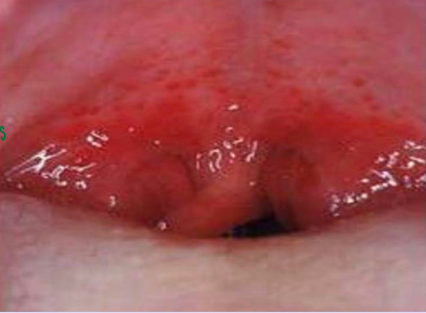
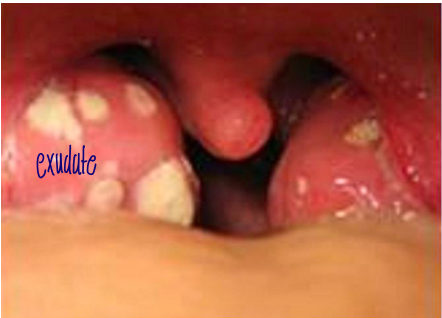
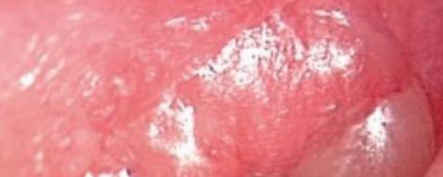
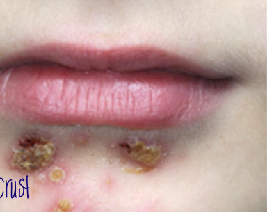
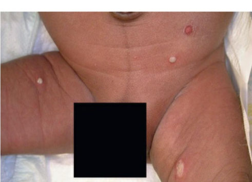

| Criterion | Points |
|---|---|
| Temperature > 38 °C | +1 |
| Absence of cough | +1 |
| Swollen, tender anterior cervical nodes (unilateral) | +1 |
| Tonsillar swelling or exudate | +1 |
| Age 3–14 y / 15–44 y / ≥ 45 y | +1 / 0 / −1 |
| Score | ≤ 0 | 1 | 2 | 3 | ≥ 4 |
|---|---|---|---|---|---|
| Strep risk | 1–2.5% | 5–10% | 11–17% | 28–35% | 51–53% |
| Feature | Viral | Bacterial (GAS) |
|---|---|---|
| Age | All ages | Peak 5–11 y |
| Onset | Variable | Sudden, severe fever |
| Sore throat | + | +++ |
| Fever | Variable | +++ |
| Abdominal pain | ± | + / ++ |
| Cough, rhinitis, hoarseness, conjunctivitis, diarrhea | + | − (absent) |
| Other symptoms | Myalgia, arthralgia | Headache |
| Tonsillar hypertrophy | Variable | +++ |
| Exudate | ± | +++ |
| Palatal petechiae | ± | + |
| Cervical nodes | Bilateral, nontender | Unilateral, tender |
| Rash | Characteristic exanthems | Scarlet fever rash |
| Test | Sensitivity | Specificity | Note |
|---|---|---|---|
| Rapid antigen (RADT) | 70–97% (↓) | > 95% | (+) ➞ treat; (−) ➞ culture |
| Throat culture | 97% | 99% | ↑ sens + ↑ spec, but 2–3 days |
| Molecular (PCR) | accurate | expensive ➞ not everywhere | |
| Suppurative | Non-suppurative |
|---|---|
| Retropharyngeal abscess · peritonsillar abscess · cervical adenitis · otitis media · sinusitis · mastoiditis · bacteremia ➞ metastatic infection | Acute rheumatic fever · acute glomerulonephritis · reactive arthritis (?) · toxin-mediated ➞ streptococcal toxic shock syndrome |


| Group | Action | Duration |
|---|---|---|
| < 2 y (esp. < 6 mo) | Always treat (↑ complications) | 10 d (prevents failure) |
| ≥ 2 y, severe: toxic, T ≥ 39 °C, severe otalgia, bilateral OM | Treat now | 5 d (= 7 d) |
| ≥ 2 y, mild | Supportive ➞ reassess at 48–72 h: resolved ➞ no antibiotic; persists ➞ treat | 5 d |

| Persistent | Nasal discharge and/or cough > 10 d, not improving |
|---|---|
| Severe | T ≥ 39 °C + purulent nasal discharge together > 3 d |
| Worsening | URTI improving ➞ worse on day 6–7: new/recurrent fever or ↑ nasal symptoms/cough |


| Erysipelas | Cellulitis | |
|---|---|---|
| Depth | Upper dermis + lymphatics (superficial) | Dermis + subcutaneous (deep) |
| Look | Sharply demarcated, follows lymphatic chain | Edema, warmth, erythema, tenderness |
| Organism | GAS (> staph); occasionally group B, C, G | S. pyogenes + S. aureus |
| Tx | Oral anti-strep, 7–14 d | Anti-strep + anti-staph (oral 5–7 d) |
| Age | Most common | Less common | Least common |
|---|---|---|---|
| < 3 mo | Fever, vomiting, lethargy, irritability | Poor feeding, FTT | Abdominal pain, jaundice, hematuria, offensive urine |
| ≥ 3 mo, preverbal | Fever | Abdominal pain, loin tenderness, vomiting, poor feeding | Lethargy, irritability, hematuria, offensive urine, FTT |
| ≥ 3 mo, verbal | Frequency, dysuria | Dysfunctional voiding, continence change, abdominal pain, loin tenderness | Fever, malaise, vomiting, hematuria, offensive/cloudy urine |
| Lower UTI (cystitis) ➞ bladder | Upper UTI (pyelonephritis) ➞ kidney |
|---|---|
| Dysuria, urgency, frequency, suprapubic pain, hematuria | Fever, shivering, nausea/vomiting, diarrhea, flank pain + lower UTI symptoms |
| Tx 3–7 d | Tx 7–14 d |
| Test | Sensitivity % | Specificity % |
|---|---|---|
| Leukocyte esterase (WBC breakdown) | 83 | 78 |
| Nitrite | 53 | 98 |
| LE or nitrite positive | 93 | 72 |
| Microscopy: WBCs | 73 | 81 |
| Microscopy: bacteria | 81 | 83 |
| Method | Use | Significant growth |
|---|---|---|
| Transurethral catheter (in/out) | 1st choice: infants, not toilet-trained | > 50,000 CFU/mL (or > 10,000 with fever + pyuria) |
| Clean-catch midstream | 1st choice: toilet-trained; 2nd choice if catheter impossible (e.g. bleeding tendency) | > 100,000 CFU/mL (or > 10,000 with fever + pyuria) |
| Suprapubic aspiration (from bladder) | Neonates, neurological pts; phimosis, severe labial adhesions | Any CFU (even one) |
| ≥ 3 mo – 14 y | First line | Alternative* | Duration |
|---|---|---|---|
| Outpatient (oral) | 1) Amox-clav 2) Cephalexin, cefuroxime, cefprozil | Cefixime (regular dose) | 3–7 d (up to 10 d by severity/age) |
| Inpatient (IV): toxic, vomiting, no oral, pyelonephritis | Ceftriaxone | Gentamicin ± ceftriaxone | 7–14 d |
| Syndrome | Main organisms | Hallmark | Diagnosis | Treatment | Complications |
|---|---|---|---|---|---|
| Pharyngitis | Viral 80%; GAS 15% | GAS: sudden high fever, exudate, unilateral tender nodes, no cough, scarlet rash; 5–11 y | Centor ➞ RADT ➞ (−) culture | Penicillin V / amoxicillin 10 d; allergy ➞ macrolide/clindamycin | ARF (preventable), AGN, abscesses, STSS |
| AOM | S. pneumoniae 30%, H. influenzae 20%, M. catarrhalis 20% | Bulging TM; ET dysfunction | Clinical (ear exam) | < 2 y: treat 10 d; ≥ 2 y: severe ➞ 5 d, mild ➞ wait 48–72 h. High-dose amoxicillin ➞ amox-clav ➞ IV ceftriaxone | Perforation, hearing loss, mastoiditis, abscess, otic hydrocephalus |
| ABS | S. pneumoniae 30–40%, H. influenzae 20%, M. catarrhalis 20% | 100% after URTI; > 10 d / ≥ 39 °C + pus > 3 d / worse day 6–7 | Clinical, no imaging | High-dose amoxicillin or amox-clav, 7 d after resolution (7–10 d) | Brain abscess |
| SSTI | S. aureus, GAS; Pseudomonas (ecthyma gangrenosum) | Honey crusts (impetigo); necrotic center (EG) | Clinical; blood culture in EG | Topical mupirocin ➞ systemic flucloxacillin; drain boils | EG ➞ septicemia |
| UTI | E. coli 70–80%, Klebsiella | Infant: fever, no focus; older: dysuria, frequency | UA screen + culture (gold); catheter > 50k, midstream > 100k, SPA any | Amox-clav oral 3–7 d; ceftriaxone IV 7–14 d | Renal abscess, pyonephrosis |
| Lesion | Depth | Organism | Clue | Treatment |
|---|---|---|---|---|
| Impetigo | Superficial | GAS (non-bullous), S. aureus toxin (bullous) | Honey crusts, 2–5 y, contagious | Topical ➞ systemic if febrile |
| Folliculitis | Epidermis | S. aureus | Pustule with central hair shaft | Self-limited; topical |
| Furuncle | Deep dermis | S. aureus | Single boil | Hot compress ± drainage |
| Carbuncle | Dermis + surrounding tissue | S. aureus | Many follicles, multiple drainage points | Surgical drainage |
| Ecthyma | Ulcer into dermis | S. pyogenes | Deep ulcer | Systemic anti-strep |
| Ecthyma gangrenosum | Necrotic | P. aeruginosa | Necrotic center, neutropenia | Anti-pseudomonal + blood culture |
| Erysipelas | Upper dermis + lymphatics | GAS | Sharply demarcated | Oral anti-strep |
| Cellulitis | Dermis + subcutaneous | S. pyogenes, S. aureus | Warm, red, swollen, tender | Anti-strep + anti-staph |
| Keyword combination | Think of |
|---|---|
| ≤ 3 y, cough, runny nose, conjunctivitis, sore throat | Viral pharyngitis ➞ supportive |
| > 3–4 y, sudden high fever, no cough, exudate, unilateral tender nodes | GAS ➞ penicillin V / amoxicillin |
| Sore throat + sandpaper rash | Scarlet fever (GAS) |
| Exudative pharyngitis, not strep | EBV, adenovirus |
| Centor ≥ 4 | 51–53% strep ➞ mostly bacterial |
| Ear tugging, crying, fever + bulging TM | AOM |
| AOM + purulent conjunctivitis / amoxicillin in last 30 d | H. influenzae ➞ amox-clav |
| ↑ ICP without hydrocephalus after AOM | Otic hydrocephalus |
| Nasal discharge/cough > 10 d, not improving | Persistent ABS |
| ≥ 39 °C + purulent discharge > 3 d | Severe ABS |
| URTI improving ➞ new fever day 6–7 | Worsening ABS |
| Recurrent sinus/ear infections, damaged cilia | Cystic fibrosis / ciliary dysfunction |
| Child < 4 y with "sinusitis" | Unlikely: sinuses underdeveloped |
| Keyword combination | Think of |
|---|---|
| Golden/honey crusts on the chin, 2–5 y | Non-bullous impetigo (GAS) |
| Bullae in an infant, heals with no scar | Bullous impetigo (S. aureus toxin) |
| Pustule with hair shaft in center | Folliculitis |
| Many draining follicles, painful | Carbuncle |
| Necrotic black center, neutropenic child | Ecthyma gangrenosum (Pseudomonas) |
| Superficial, sharply demarcated, along lymphatics | Erysipelas (GAS) |
| Well infant, fever, no focus | UTI ➞ urine analysis |
| Adolescent girl, gram-positive UTI | S. saprophyticus |
| Hemorrhagic cystitis, immunocompromised | Adenovirus |
| Pyuria, sterile culture | TB |
| UTI in a neonate | GBS |
| Candida in urine + catheter | Remove the catheter |
| Nitrite (+) / LE or nitrite (+) | Best specificity 98% / best sensitivity 93% |
1. 3-year-old: low-grade fever, runny nose, cough, sore throat. Best management?
2. 6-year-old: high fever, severe sore throat, no cough, tonsillar exudate. Main reason to give antibiotics?
3. 6-month-old: fever, vomiting, excessive crying; ear exam shows a bulging TM. Best management?
4. 6-year-old: red swollen chin with golden crusts; well and afebrile. Best treatment?
5. 9-month-old: fever 3 days, looks well, T 38.9 °C, no focus. Next step?
6. Rapid antigen test for GAS: which is correct?
7. 3-year-old with AOM took amoxicillin 3 weeks ago. First-line now?
8. Hallmark sign of AOM?
9. Nasal discharge and cough for 12 days, not improving, afebrile. Diagnosis?
10. Neutropenic child with leukemia: skin lesion with necrotic black center. Organism?
11. 10-month-old, not toilet-trained. Collection method and cut-off?
12. 4-year-old with febrile UTI, well, drinking. Correct statement?
13. 1-year-old recovered from first febrile UTI. When is RBUS done?
14. Pyuria with repeatedly sterile cultures. Consider?
| 1 | B: ≤ 3 y + cough + rhinitis ➞ viral ➞ supportive |
| 2 | B: prevent ARF (9-day window); GN not preventable |
| 3 | B: < 2 y (esp. < 6 mo) ➞ treat, 10 d |
| 4 | A: well/afebrile ➞ topical; ill/febrile ➞ systemic |
| 5 | B: infant fever without focus ➞ UTI ➞ urine analysis |
| 6 | B: RADT sens 70–97%, spec > 95% ➞ (−) ➞ culture |
| 7 | B: amoxicillin in last 30 d ➞ amox-clav (H. influenzae) |
| 8 | B: bulging TM; redness is non-specific |
| 9 | B: > 10 d, not improving ➞ persistent; no imaging |
| 10 | C: ecthyma gangrenosum ➞ anti-pseudomonal + blood culture |
| 11 | B: catheter > 50,000 (or > 10,000 + fever + pyuria) |
| 12 | B: oral = IV ≥ 2 mo; ampicillin ~70% and co-trimoxazole ~60% resistant |
| 13 | B: 2–6 wk avoids false positives; early only if severe/complicated |
| 14 | C: TB ➞ sterile pyuria |